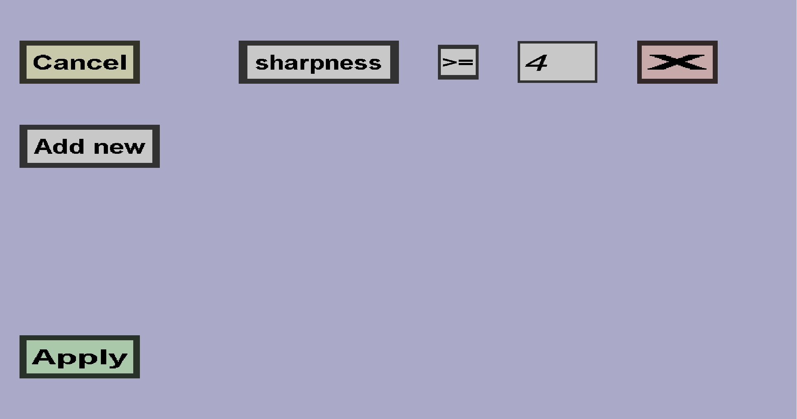

The enchantment constraints menu can be used to configure the enchantment constraints of a (crafting recipe) ingredient. If you have 1 enchantment constraint, it should look like this:
You can use the Add new button to add a new enchantment constraint and you can use the red X button on the right of an existing constraint to remove it. Each enchantment constraing requires the item to have a specific enchantment at, above, or below a specific level (where a level of 0 indicates that the item does not have the enchantment). For instance, in the screenshot above, items must have the sharpness enchantment at level 4 or higher.